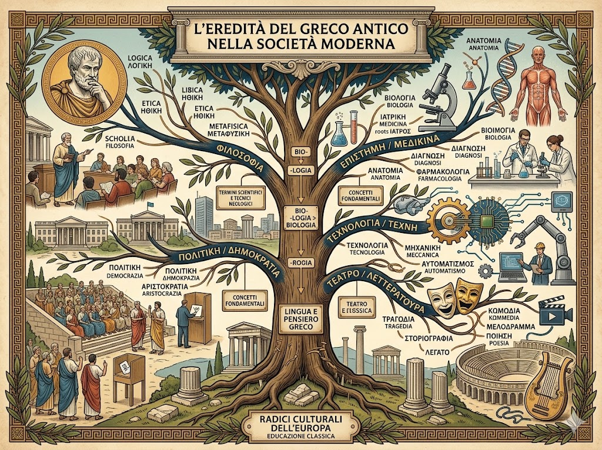
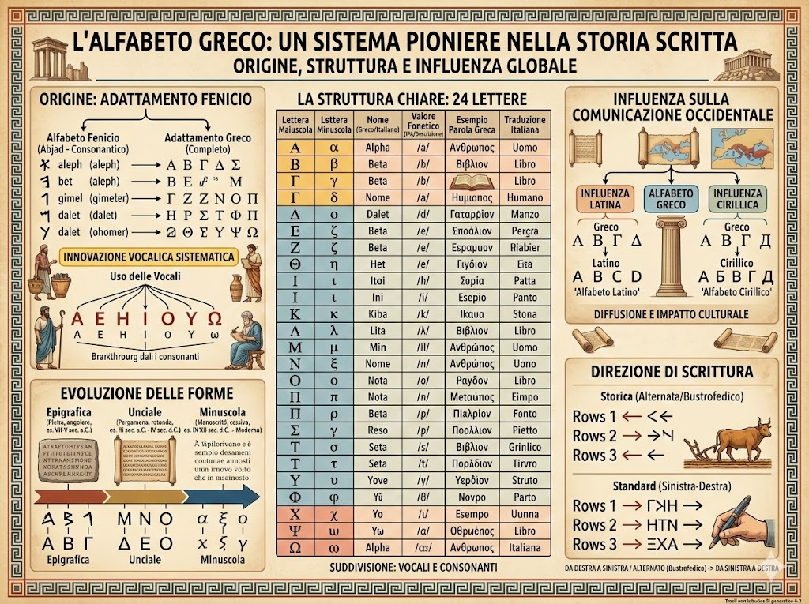

La storia della lingua greca antica ebbe origine nella penisola balcanica, in particolare nelle regioni della Grecia continentale e nelle isole dell’Egeo. Inizialmente parlata da diverse comunità locali e articolata in vari dialetti, la lingua greca si sviluppò e si diffuse grazie alla fondazione di colonie lungo le coste del Mediterraneo e del Mar Nero. Un momento decisivo per la sua espansione fu l’età di Alessandro Magno, le cui conquiste favorirono la diffusione del greco in vaste aree dell’Asia e dell’Egitto. In questo periodo nacque la koinè, una forma comune di greco che divenne lingua di comunicazione, commercio e cultura in tutto il mondo ellenistico. Anche sotto il dominio dell’Impero Romano, il greco mantenne un ruolo centrale nelle regioni orientali del Mediterraneo, affermandosi come lingua della filosofia, della scienza e della letteratura. Nei secoli successivi continuò a evolversi, influenzando profondamente la cultura europea e lasciando un’eredità duratura nelle lingue moderne.
Il greco antico, pur non essendo più una lingua parlata nella sua forma originaria, ha lasciato un’eredità profonda nella società contemporanea. Molti termini delle lingue moderne, non solo europee, derivano dal greco, soprattutto nei campi della scienza, della medicina, della filosofia e della tecnologia, condividendo radici lessicali e concetti fondamentali. Oltre all’influenza linguistica, il greco antico ha avuto un ruolo centrale nello sviluppo del pensiero occidentale: la filosofia, la politica, il teatro e la storiografia devono molto ai modelli elaborati nel mondo greco. Numerosi termini tecnici e scientifici sono ancora oggi formati a partire da parole greche, a dimostrazione della sua duratura vitalità. La sua eredità si manifesta anche nell’educazione, nello studio dei classici e nei principi della democrazia, contribuendo a mantenere vivo il legame con le radici culturali dell’Europa e a influenzare il pensiero e il linguaggio della società moderna.

L’alfabeto greco è il sistema di scrittura utilizzato per trascrivere la lingua greca antica ed è uno dei più importanti della storia occidentale. Deriva dall’alfabeto fenicio, che i Greci adattarono introducendo un’innovazione fondamentale: l’uso sistematico delle vocali, rendendo la scrittura più precisa e completa. L’alfabeto greco è composto da 24 lettere, suddivise in vocali e consonanti, e presenta forme maiuscole e minuscole sviluppatesi nel corso dei secoli. Le lettere vengono disposte in sequenza lineare per formare parole e testi; inizialmente si scriveva anche da destra a sinistra o in modo alternato (bustrofedico), ma in seguito si affermò la scrittura da sinistra a destra. La struttura chiara e fonetica dell’alfabeto greco ne favorì la diffusione e influenzò direttamente altri sistemi di scrittura, tra cui quello latino e il cirillico, contribuendo in modo decisivo alla storia della comunicazione scritta.
